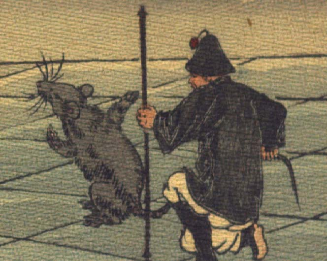

鼠。後脚で座り、前脚をあげて、何かを説明しようとしている。後ろに座った兵士のような姿の人間の男が、その尻尾を掴んでいる。
著作者：John Little Archibald／出典：親書誌：U426_nichibunken_0122：The rat's plaint／日付：2006／資源識別子：U426_nichibunken_0122_0003_0000
Copyright (c)2010- International Research Center for Japanese Studies, Kyoto, Japan. All rights reserved.